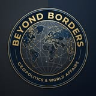

BEYOND BORDERS
සීමාවෙන් ඔබ්බට ලෝකය කියවමු
WORLD DESKභූ දේශපාලනය · ලෝක පුවත්
ADD YOUR NEWS PHOTOImage: arab_mapo.jpg
අරාබි එක්සත්කමේ සිහිනය සහ කලාපීය බලතුලනය
ගෝලීය විමසුම / WORLD BRIEF
අරාබි ලෝකය කිසිදා එක්සත් නොවූයේ ඇයි? ලෝක බලතුලනය වෙනස් කළ හැකිව තිබූ අසාර්ථක සිහිනය
පොදු භාෂාවක්, ඉතිහාසයක් සහ සංස්කෘතික බැඳීම් තිබුණද, අරාබි රාජ්යයන් එක්සත් දේශපාලන බලයක් බවට පත් නොවීය. ජාතික අභිලාෂ, නායකත්ව තරග, විදේශීය බලපෑම් සහ කලාපීය ගැටුම් එම සිහිනයට බාධා කළේ කෙසේද? එය සාර්ථක වූයේ නම් මැදපෙරදිගත් ලෝක බලතුලනයත් වෙනස් විය හැකිව තිබුණි.